3D Printed Parts
These parts were designed in Fusion 360 and then 3D printed in FabLab.The three main parts i needed were the spinners, flippers and launcher.
Spinners :
First , i started with a square, then i extended lines out to begin sketching the edges of the spinner.
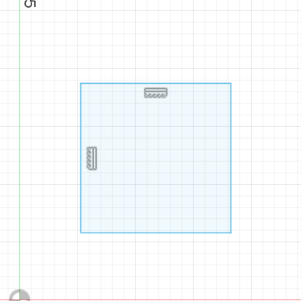 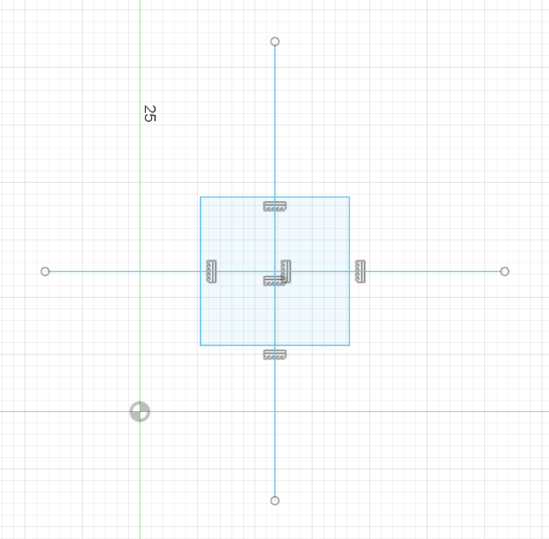Next, i drew circles at every point, this was to create a guide for the curve of the spinners . Then i connected the edges of the square to the edges of the circles to form this.
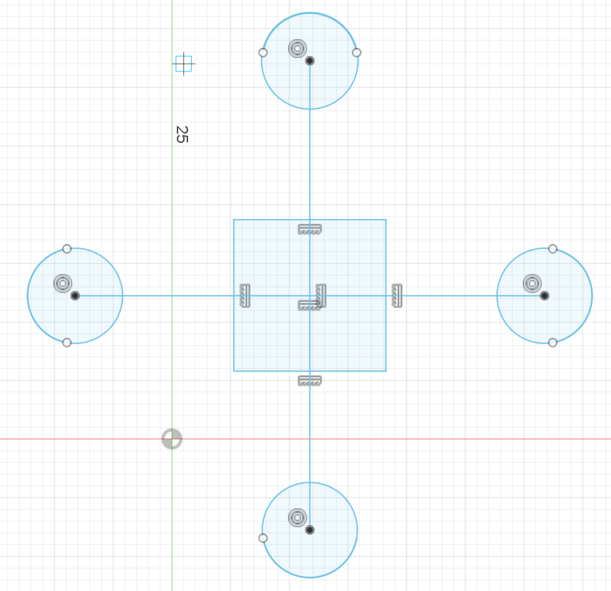 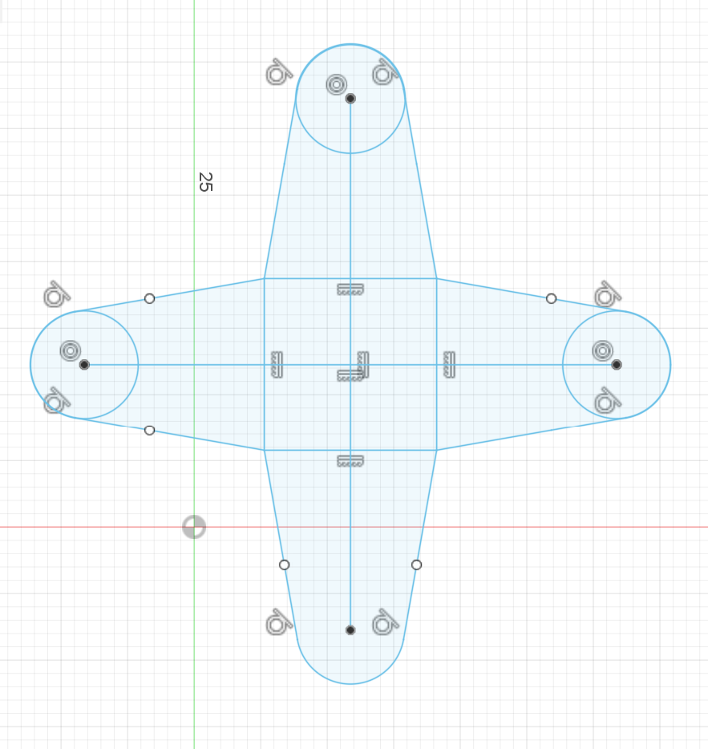Then, I used the trim tool to clean up the interior of the sketch. After completing the sketch, i used the extrude tool to form this mass.
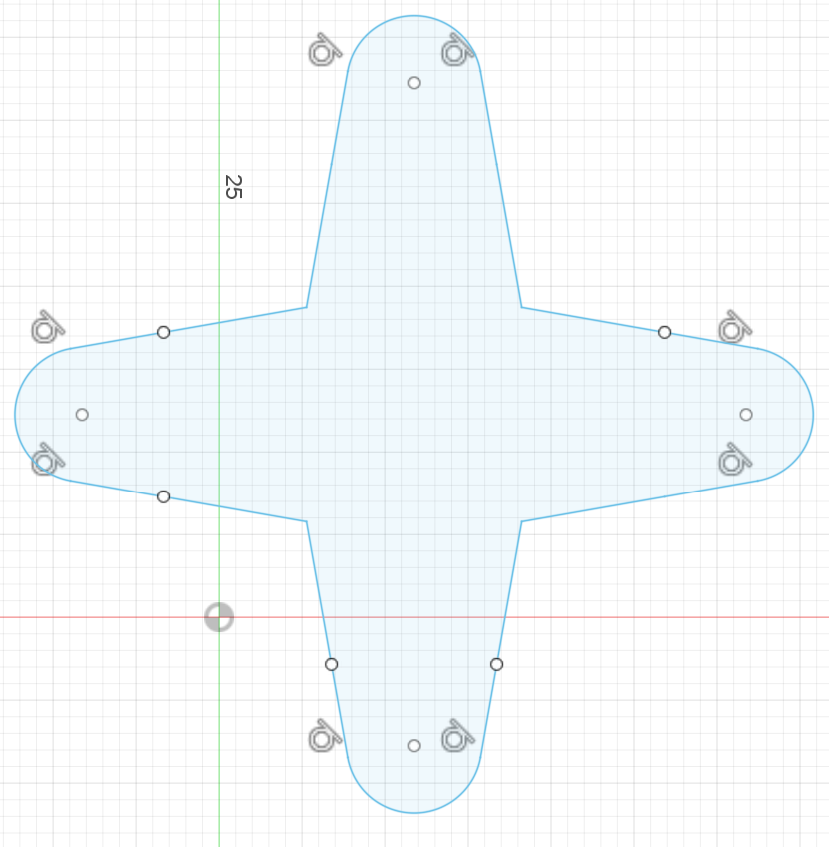 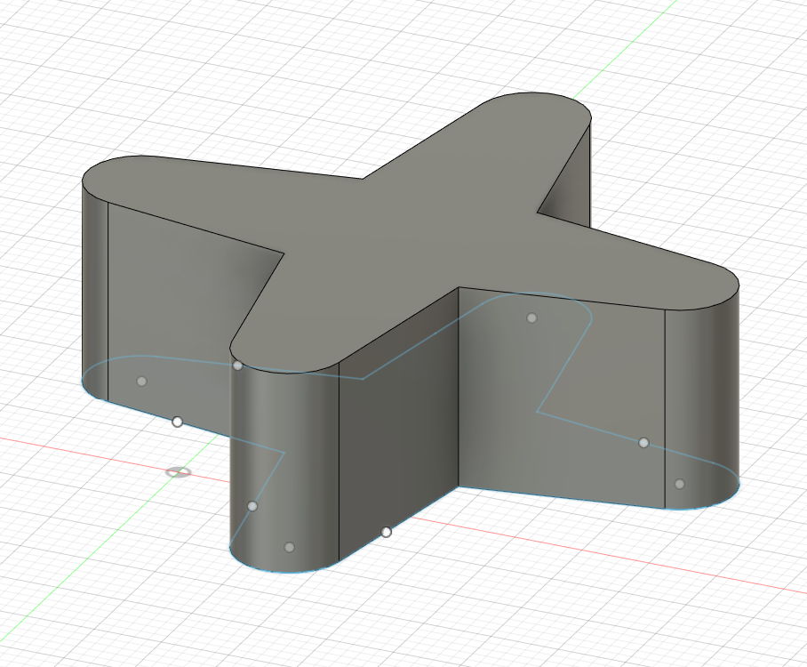Then using the shelling tool, i cleared out the interior of the shape , this is to create a fitting for the motor part.
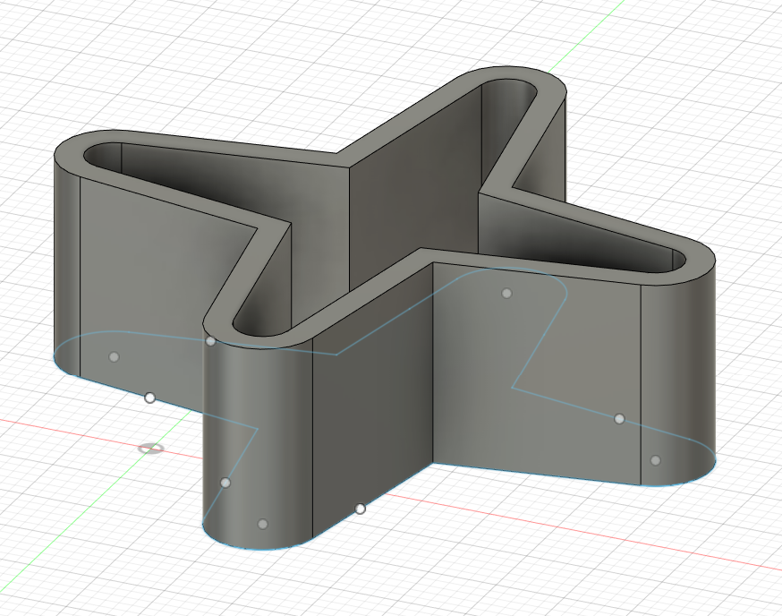The spinners as done in fusion 360.
Here shows the printing process for the spinner, i made three.
Flippers:
First, i drew a 50mm straight line , then i drew two circles with the edge of the line being the centre of each circle.
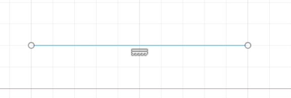 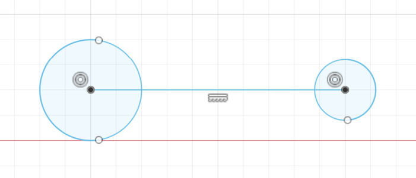Next, i connected both of the circles with a straight line . Then , i used the trim tool to clean up the sketch itself.
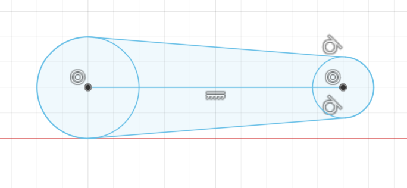 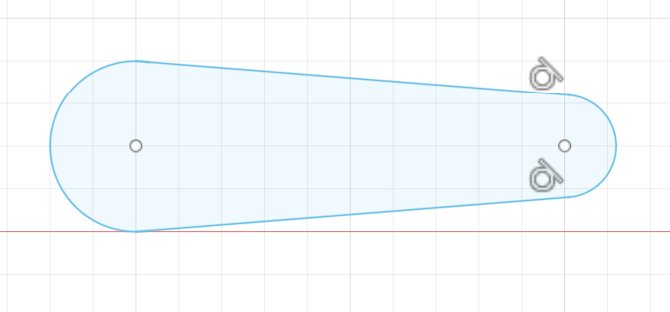Then, i used the extrude tool to make it from 2d to 3d and then used the shelling tool to clear out the insides of the mass for the motor to attach to.
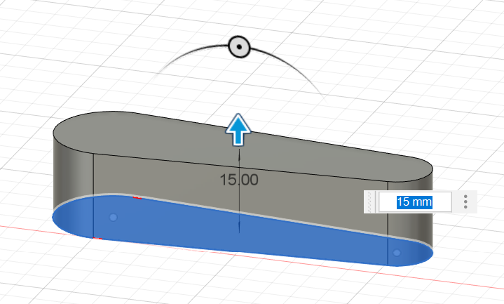 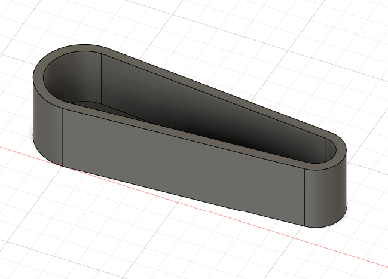The flippers as done in fusion 360.
Here shows the printing process for the flipper, i made two.
Launcher:
Here shows the printing process for the launcher, i made one.
Curves :
Here shows the printing process for the curves, i made two.The process in designing this was made along with the laser cut box in order to have a perfect fit.
As seen here, my printing had an issue when it was almost done... However, it was not due to the design of it rather it was the 3d printer itself. So i had to reprint it of course.
Here is the second time round of printing... This time it came out perfect.